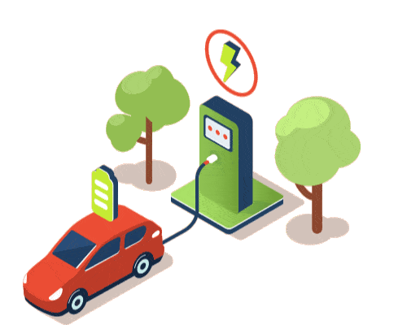

➢ Travel Website
• Developed a responsive travel website, using HTML, CSS,
JavaScript, PHP, and SCSS. For the needs travel
enthusiasts.
• Utilized HTML, CSS, and SCSS for modern, responsive
design and seamless user experience.
• Implemented JavaScript for interactive features,
enhancing user engagement and navigation.
• Integrated PHP for dynamic content, such as travel
deals, user registration, and data management.
• Maintained and updated the website, ensuring accurate
information and optimal performance.
• Website link

➢ IoT module for multiple EVs charging platform - Digital Ecosystem
• Development of a charging ecosystem for a specific geo- mapping location using Python.
• The module can directly notify the user remotely about
the available charging slots and the battery status.
• A new algorithm is developed that would calculate the
priority of charge scheduling for a vehicle based on
factors such as State of Charge, charging priority.
• Users can choose charging stations from Grid-To-Vehicle
(G2V), Building-To-Vehicle (B2V), and Vehicle-To-Vehicle
(V2V) based on their needs.
➢ Smart Machine Authorizer
• Use to monitor the activity of any machine by the use of
sensors (like vibration, heat), Arduino and python
programming.
• Provide privacy for any user to access any machine
using their RFID card. It can also records entry time and
exit time for any user.
© 2022 Nikhil @ CV Website